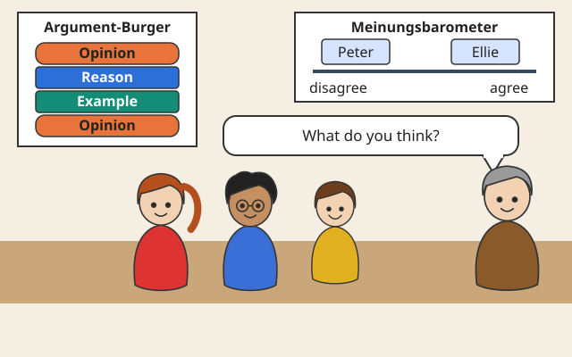
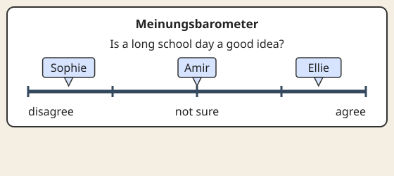

Meinung sagen, zustimmen und widersprechen
Mit einem KI-Tutor lernen
Ein KI-Tutor erklärt dir diese Seite und hilft dir bei den Aufgaben. Wähl deinen Assistenten:
Mit Claude öffnen Mit ChatGPT öffnen Mit Mistral Vibe öffnen
Du nutzt dein eigenes Konto beim Anbieter. Der Assistent ist kein Angebot von lernapps.net: lernapps liefert nur Inhalte und Aufgaben. Die Wahl gilt für alle Seiten, nur auf diesem Gerät.
Mr Hill fragt, was ihr denkt

© CC-BY-4.0An der Meinungswand: links das Poster Argument-Burger, rechts das Meinungsbarometer mit den Kärtchen von Peter und Ellie. Von links: Ellie (roter Pferdeschwanz), Amir (Brille), Peter (gelbe Jacke) und Mr Hill (graue Haare).
Mr Hill fragt die Klasse: „What do you think?“ (Was denkt ihr?) Jeder stellt sein Namenskärtchen auf das Meinungsbarometer.
Aufgabe
Lösung
The school bus comes at eight
Das ist eine Tatsache. Man kann sie prüfen.
I think the school bus is too slow richtige Antwort
Das ist eine Meinung. Eine andere Person kann anders denken.
The school bus has forty seats
Das ist eine Tatsache. Man kann sie zählen.
Eine Meinung sagt, was jemand denkt. Eine Tatsache kann man prüfen.
Das kannst du danach: Du sagst deine Meinung, stimmst anderen zu und widersprichst ihnen höflich.
Ein Chat über die Mittagspause
| Englisch | Deutsch |
|---|---|
| lunch break | Mittagspause |
| canteen | Kantine |
| queue | Warteschlange |
| relax | sich ausruhen |
| enough | genug |
| believe | glauben |
| I see your point | ich verstehe, was du meinst |
| You are right | du hast recht |
| I am not sure | ich bin nicht sicher |
Mr Hill fragt im Klassenchat, ob die Mittagspause zu kurz ist. Die Zahlen sind die Zeilen.
1 Mr Hill: Our lunch break is forty-five minutes. Is that too short? Put your card on the barometer and tell us why.
2 Ellie: In my opinion, it is too short. I think that we need more time to eat and to relax.
3 Amir: I disagree. I believe that forty-five minutes is enough. We can play football after lunch.
4 Sophie: I see your point, Amir. But I am not sure. The queue in the canteen is very long.
5 Amir: That is true. The queue is long on Fridays.
6 Ellie: You are right, Sophie. And I do not agree with Amir about the football. We cannot eat and play in forty-five minutes.
7 Amir: I do not agree with you, Ellie. I eat in ten minutes!
8 Sophie: Ha! I agree with Ellie, and I agree with Amir about the queue.
9 Mr Hill: Good. You can agree with one thing and disagree with another. Where is your card, Sophie?
10 Sophie: In the middle. I am not sure yet.
11 Ellie: We need a second lunch queue for everyone.
12 Amir: Good idea. I agree with that.
Drei Fächer für deine Meinung

© CC-BY-4.0Das Meinungsbarometer: Je weiter rechts das Kärtchen steht, desto mehr stimmt die Person zu.
Merke
Ein Fach ist eine Gruppe von Ausdrücken, die dasselbe tun.
Meinung sagen: In my opinion, …, I think that … oder I believe that …. Zustimmen: I agree., You are right. oder That is true. Widersprechen: I disagree. oder I do not agree. Nach I steht agree ohne am: nicht I am agree. Für think gilt dasselbe: I think, nicht I am thinking. Das Kärtchen links heißt disagree, rechts agree, in der Mitte steht man bei I am not sure.
Ausdrücke sortieren, einsetzen und schreiben
Aufgabe
Lösung
Sie ist lang genug
Das glaubt Amir in Zeile 3.
Sie ist zu kurz richtige Antwort
Das sagt Ellie in Zeile 2.
Sie ist zu lang
Das sagt in dem Chat niemand.
Ellie beginnt mit In my opinion.
Aufgabe
Lösung
Zeile 3
Hier widerspricht Amir.
Zeile 5 richtige Antwort
Amir sagt That is true zu Sophie.
Zeile 7
Hier widerspricht Amir Ellie.
Zeile 8 richtige Antwort
Sophie sagt I agree zu Ellie und zu Amir.
Zeile 6 richtige Antwort
Ellie sagt You are right zu Sophie.
Zeile 12 richtige Antwort
Amir sagt I agree zu Ellies Idee.
Zustimmen heißt dasselbe denken.
Aufgabe
Lösung
Richtige Antwort: I believe that the library is too quiet. – Meinung sagen; That is true. – Zustimmen; I do not agree with you. – Widersprechen
Jedes Fach hat einen Ausdruck.
Aufgabe
Wähle den Ausdruck, der in die Lücke passt.
- Ich stimme Ellie zu. → I … with Ellie.
- Ich bin nicht deiner Meinung. → I … agree with you.
- Ich denke, dass der Schulgarten schön ist. → I … that the school garden is nice.
Lösung
- I agree with Ellie.
- I do not agree with you.
- I think that the school garden is nice.
Aufgabe
Lösung
Rechts, bei agree
Rechts steht, wer zustimmt. Peter stimmt nicht zu.
In der Mitte
In der Mitte steht, wer sagt I am not sure.
Links, bei disagree richtige Antwort
Peter widerspricht, darum steht sein Kärtchen links.
Widerspruch steht links.
Aufgabe
Schreibe die Sätze auf Englisch. Satz 1: Meiner Meinung nach macht Fußball Spaß. Satz 2: Ich bin nicht deiner Meinung. Satz 3: Ich denke, Musik ist wichtig. Ergänze, was für einen ganzen Satz fehlt.
- in my opinion · football · fun
- I · not · agree · you
- I · think · music · important
Lösung
- In my opinion, football is fun. (auch richtig: I think football is fun.; I think that football is fun.)
- I do not agree with you. (auch richtig: I don't agree with you.; I disagree with you.)
- I think that music is important. (auch richtig: I think music is important.)
Aufgabe
Hör zu und schreibe, was du hörst.
- KI
- KI
- KI
Lösung
- I think the new gym is great.
- You are right, the bus is always late.
- I disagree, because the room is too small.
Dein Kärtchen an der Meinungswand
Aufgabe
Hör zu, sprich nach und nimm dich auf. Vergleiche dann mit dem Original.
Tipp
Hör zu. Sprich dann langsam nach.
- What is your opinion?KI
- Do you agree with me?KI
- That is a good point.KI
Zum Aufnehmen braucht diese Aufgabe JavaScript. Die Beispiele kannst du auch ohne anhören.
Lösung
- What is your opinion?
- Do you agree with me?
- That is a good point.
Offene Aufgabe
Mr Hill fragt: „Is a trip to a museum a good idea?“ Schreibe drei bis vier Sätze: deine Meinung und ein Satz, in dem du jemandem zustimmst oder widersprichst.
Tipp
Die App bewertet nicht. Prüfe deinen Text anhand der Punkte.
Eine gute Antwort enthält:
Lösung
In my opinion, a trip to a museum is a good idea. Peter says that museums are boring. I see his point, but I disagree. I think that we can learn a lot, and my card is on agree.
Wie es weitergeht
Mr Hill sagt: „Please give a reason.“ Auf der nächsten Seite lernst du, wie du deine Meinung mit einem Grund und einem Beispiel stützt.
Fehler gefunden oder eine Idee für diese App?